Cyclical Commodities as a Leading Indicator
Reading oil, copper, lumber and iron ore — plus the trade-weighted dollar and hedge-fund positioning — as a real-time gauge of future inflation and growth.
Cyclical commodities trade every day and move with the business cycle, so their prices lead the monthly inflation numbers (CPI/PPI) and quarterly Real GDP, which are only reported after the fact.
The gist
- Cyclical (industrial) commodities — oil, copper, lumber, iron ore — move with the business cycle, so they are a leading gauge to future CPI/PPI inflation and Real GDP, both of which are reported after the fact.
- CPI ex Food & Energy (Core CPI, CPILFESL) and PPI All Commodities (PPIACO) are COINCIDENT indicators, useful only as confirmation because the Fed can be reactionary.
- A price move is only a clean growth/inflation signal if it is DEMAND-led (inventories rising/falling with demand), not SUPPLY-led (cost-push / supply shocks); demand-led = strong GDP signal, supply-led = weak signal.
- Analyse each commodity with a distribution-of-returns / standard-deviation study on daily and weekly changes: within 1 SD is 'Normal', beyond 1/2/3 SD is 'Abnormal'.
- The trade-weighted US dollar moves inversely to commodities: a falling dollar is generally inflationary, a rising dollar deflationary.
- The COT report shows hedge-fund net long/short positioning; 'the flip' (net short to net long or vice versa) marks a turning point, but positioning can stay extreme for a long time — it is not a rulebook.
Recap — the leading indicators so far
- Money Markets: Real Interest Rates and the Yield Curve (government bonds); IG and HY/Junk spreads over the 10-year (corporate bonds); M2 money supply (accessory); stock-market volatility (S&P 500 VIX).
- Surveys: ISM Manufacturing (Manufacturing PMI), ISM non-Manufacturing (Services PMI), University of Michigan Consumer Sentiment (UMCSI), the Census Bureau's Building Permits, and the NFIB Small Business Optimism Index.
- This lesson covers the final group: Cyclical Commodity Prices (oil, copper, lumber, iron ore) and the USD Trade Weighted Indices.
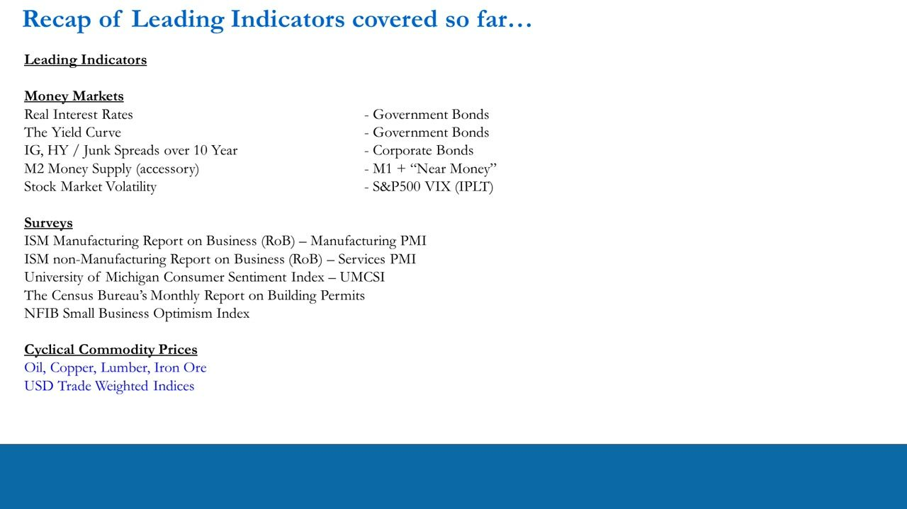
Price inflation in an economy
- A low and stable rate of inflation is an essential part of a healthy capitalist system; it provides the foundation for stable Real GDP growth and employment.
- The 'ideal' is good nominal GDP growth with a stable, lower positive inflation rate, so Real GDP is positive and predictable.
- High inflation, deflation, or inflation volatility are non-ideal or bad conditions — big moves away from 'Normal' are in the significant minority of history.
The lesson frames commodities as a real-time read on this inflation backdrop before the official numbers arrive.
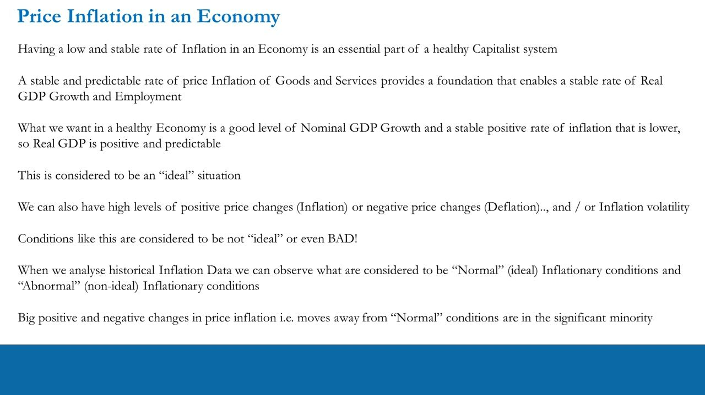
Consumer and producer inflation data are coincident
- CPI ex Food & Energy (CPILFESL, 'Core CPI', monthly, data back to 1957): calculated like headline CPI but excludes food and energy-linked items to strip out volatile international prices; measures prices facing consumers.
- PPI All Commodities (PPIACO, monthly, data back to 1913, indexed to 100 in 1982): measures input costs/prices for businesses that make products, across a wide range of commodities and industries.
- Both Core CPI and PPI All Commodities are COINCIDENT indicators, not leading — but still useful as confirmation indicators because the Fed can be reactionary.
Core CPI removes food and energy so it captures underlying inflation without exogenous global food/oil swings. PPI captures the business-input side of inflation.
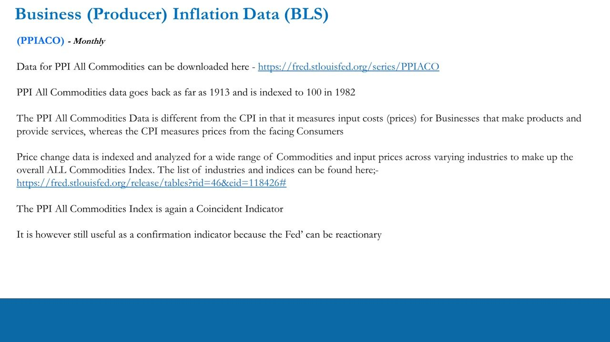
The cyclical commodity basket and the DoR method
- Oil: WTI Crude, Brent Oil, and the WTI-Brent Spread.
- Copper: COMEX, LME, SHFE, plus the COMEX-LME and LME-SHFE spreads.
- Lumber: Random Length Lumber (CME).
- Iron Ore: Iron Ore 62% (CME) and Iron Ore (DCE, Dalian).
- For each, a distribution-of-returns (DoR) statistical analysis identifies 'Normal' (within 1 SD) moves and 'Abnormal' (beyond 1/2/3 SD) moves on daily and weekly horizons.
- Downloads provided: Inflation_CPI_&_PPI, Commodity_Prices, Commitment_of_Traders_Metals_&_Energy, USD_Trade_Weighted_Index, and a Summary_File covering STD moves from -3 to +3 for all instruments.
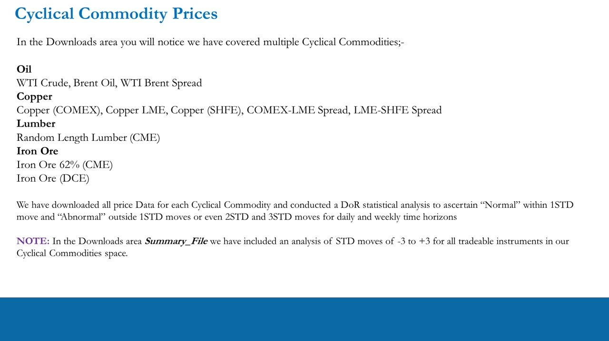
Why cyclical commodities lead
- Cyclical commodities move with the business cycle — the same cycle tracked by ISM(M), ISM(nM), UMCSI, Building Permits and the NFIB.
- They are indicative of future CPI and PPI (inflation, reported monthly) and future Real GDP (reported quarterly) — Expansion vs Contraction.
- Real GDP and inflation are reported after the fact; cyclical commodities are 'leading' because they trade and move every day.
- Process example: when ISM Manufacturing signals a turning point (new orders growing after contraction, plus inventory stocking and rising input commodity prices), businesses are buying more input commodities in real time — which feeds into inflation statistics only later, by which point prices have already moved.
The core edge: prices react today; the official statistics that everyone else waits for only confirm it weeks or months later.
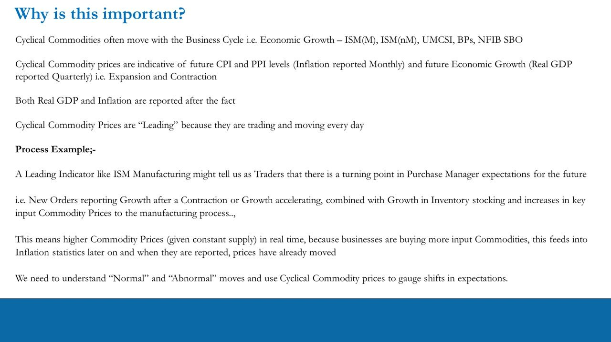
Inventory dynamics and the supply-side caveat
- Rising inventories indicate rising demand (purchasing managers increasing stock); falling inventories indicate falling demand.
- Prices are a function of BOTH demand and supply, so prices need not follow expected demand — cost-push or supply factors can also drive them.
- The key interpretive question: at any one moment, are demand factors outstripping supply factors, or vice versa?
- A supporting PDF lists demand/supply data sources for each commodity; if prices are driven by SUPPLY factors it is a weak signal to global GDP, if by DEMAND factors it is a strong signal.
This is the central discipline of the lesson: only a demand-led price move is a clean read on growth. A supply-shock rally or crash must be discounted.
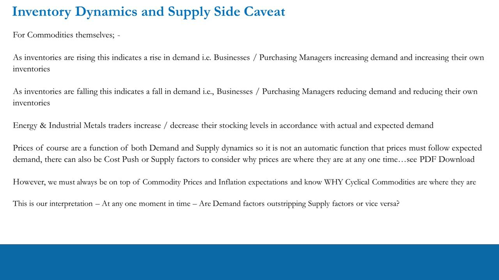
PPI All Commodities contributory data
- PPI All Commodities can be broken down (FRED Table 8) into contributory groups: Farm products / processed foods, and Industrial commodities.
- Industrial-commodity sub-indices include Fuels & related power, Chemicals, Lumber & wood products, Metals & metal products, and 'Industrial commodities less fuels'.
- Other groupings isolate specific cyclicals: Petroleum products refined, Lumber, Iron and steel, Nonferrous metals.
- Isolating the industrial/cyclical portion of PPI lets you track the group that reflects cyclical manufacturing demand rather than the noisier headline.
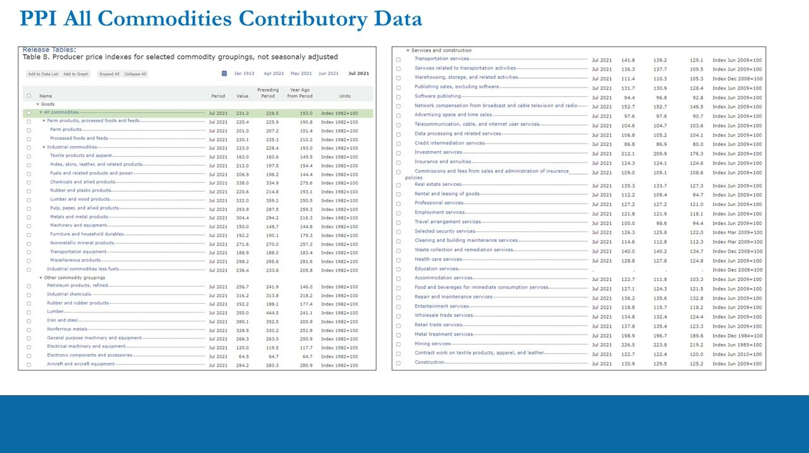
Manufacturing vs services — the read-across
- Manufacturing is ~20% of the US economy; Non-Manufacturing (Services) is ~80%.
- There are no sensibly tradable commodities that lead the whole service sector, but oil, copper, lumber and iron ore are available daily and lead the goods/manufacturing side.
- Some service industries are still linked to final demand like commodities — e.g. Real Estate Services: a housing slowdown (lower Building Permits → fewer Starts/Completions) means less lumber demanded, so (constant supply) the lumber price falls and Real Estate Services should slow.
- For specific service areas you can also read the industry PPI index itself (e.g. Real Estate Services, WPU43) to gauge inflation and growth.
Commodities directly cover only the goods economy, but demand-led moves ripple into linked service industries, extending the read-across.
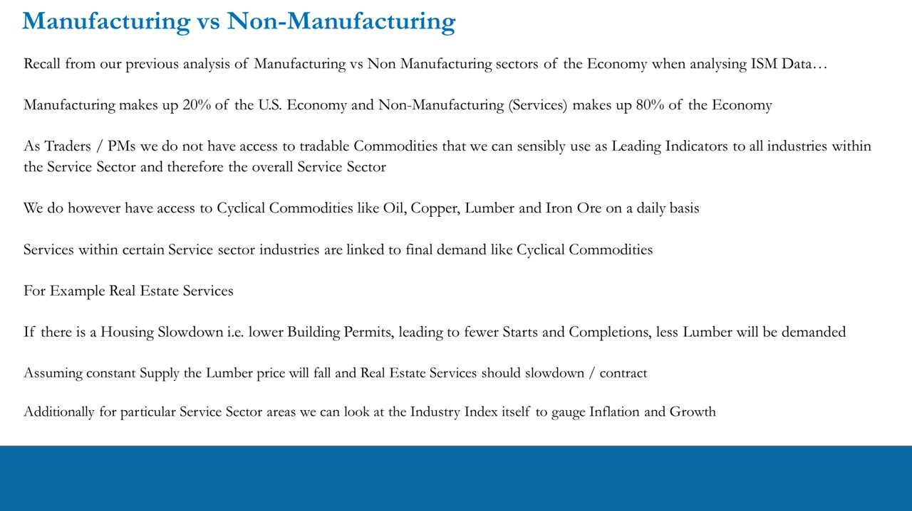
The leading-indicator gauge
- Viewed as a group, the relative price performance of the cyclical commodities shows healthy or weak demand from the cyclical manufacturing industries.
- Constant demand + tightening supply → prices up (inflation); constant demand + increasing supply → prices down (deflation).
- With supply-side inflation, commodities rise NOT because of a demand increase, and Real GDP may actually fall; with supply-side deflation, they fall NOT because demand fell, and Real GDP may rise — so supply-driven moves must be tempered.
- IF demand-led, cyclical commodity prices are indicative of future CPI/PPI and future Real GDP (Expansion/Contraction) — a leading gauge that trades every day, ahead of the official statistics.
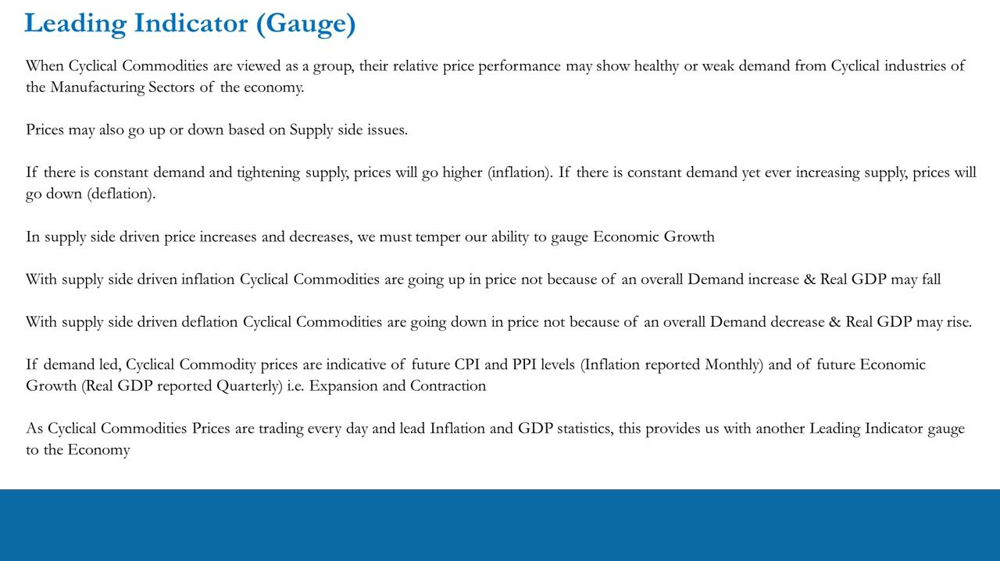
Commitment of Traders — 'the flip'
- The COT report gives hedge-fund / non-commercial positioning: Open Interest, Manager Longs, Manager Shorts, and the Net Long/Short (% of OI).
- The method: take the % change in long and short positioning and the difference between them (% Long minus % Short) to get the Net.
- 'The flip' is when hedge funds cross from net Long to net Short or net Short to net Long — a turning-point signal; the rate of change shows how committed the change is.
- Worked example: copper flipped from net short to net long in the week of 2-Jun-20 (Net Long/Short moving from -2.98% on 26-May-20 to +1.33% on 2-Jun-20), which was borne out in the copper price recovery through 2020.
The 'smart money' runs the same leading-indicator analysis, so a shift in their aggregate positioning encodes their forward inflation and growth view.
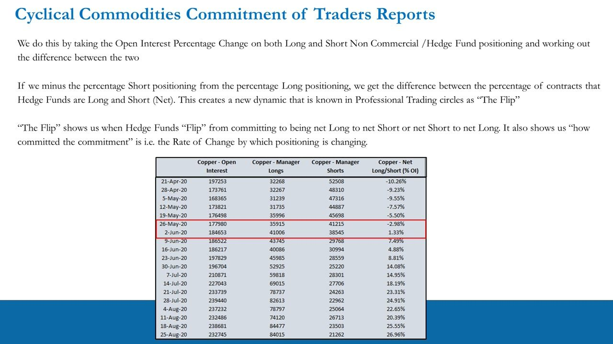
Positioning extremes
- Extremely positive = Longs minus Shorts at or near historical highs; extremely negative = at or near historical lows.
- Extremes can be a warning sign of potential turning points.
- But there is no rulebook: positioning and prices can stay at extreme positive or extreme negative for a long time before reversing.
Use COT as a sentiment overlay on the demand/supply work, never as a mechanical trigger.
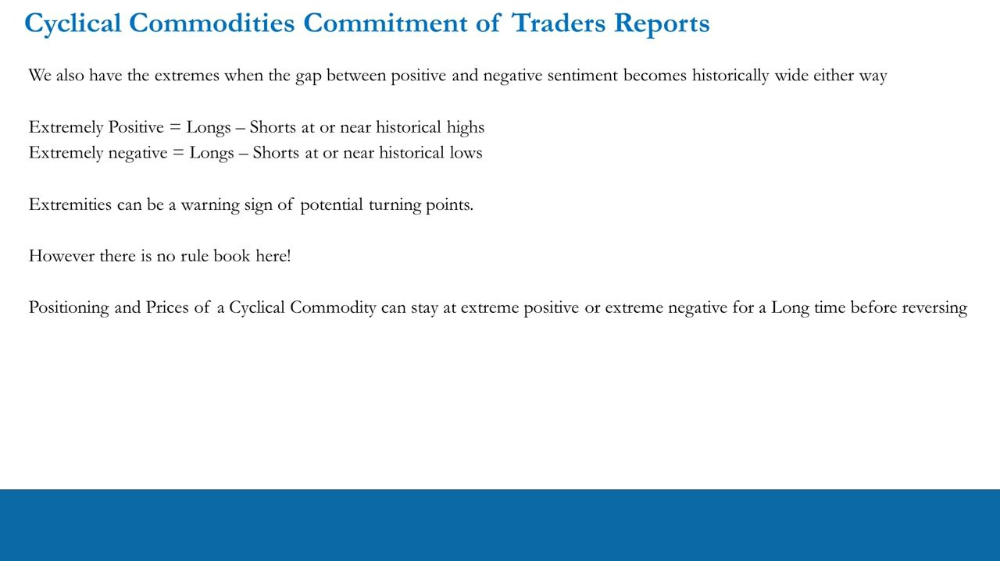
The trade-weighted US dollar — the inverse lens
- All major commodities are priced in US dollars, so the trade-weighted dollar moves inversely to commodity prices: a falling dollar is generally inflationary, a rising dollar deflationary.
- Three Fed indices (Broad, Goods & Services): the Broad index (DTWEXBGS), the Advanced Foreign Economies index (DTWEXAFEGS), and the Emerging Markets Economies index (DTWEXEMEGS) — each a weighted basket of trading-partner currencies.
- Run the same distribution-of-returns / standard-deviation analysis on daily and weekly dollar changes so an abnormal (>1/2/3 SD) move flags a probable shift in inflation/GDP expectations.
- Read the dollar WITH the commodity demand/supply work — a dollar move is a signal only if commodities move inversely and the move is demand-backed.
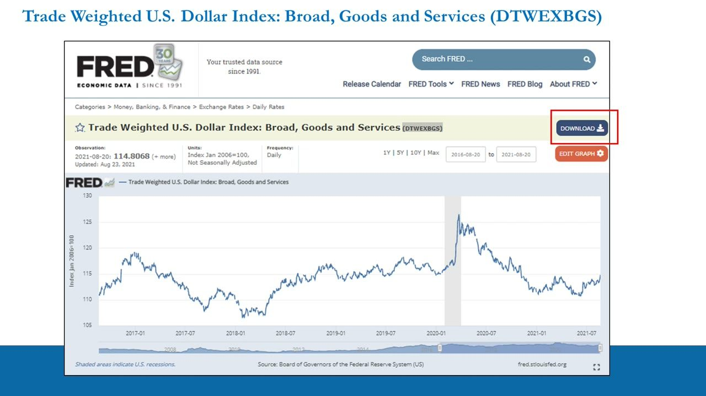
Summary file — standard-deviation move sizes
- The Summary File tabulates the ±1/2/3 SD daily and weekly move sizes for every instrument, defining what counts as 'Normal' vs 'Abnormal'.
- Daily 1-SD moves (approx): WTI ±4.22%, Brent -2.24%/+2.32%, Copper (COMEX) ±1.64%/1.70%, Lumber -2.19%/+2.27%, Iron Ore (CME) ±1.66%/1.70%, USD Broad ±~0.31%.
- Weekly 1-SD moves (approx): WTI -6.08%/+6.38%, Brent -4.80%/+5.23%, Copper (COMEX) -3.40%/+3.71%, Lumber -4.92%/+5.32%, USD Broad ±~0.7-0.76%.
- Oil is the most volatile of the basket; the USD indices are by far the least volatile — so equivalent SD moves in the dollar are tiny in percent terms.
These calibrated thresholds turn each daily print into a 'Normal or Abnormal?' read against that instrument's own history.
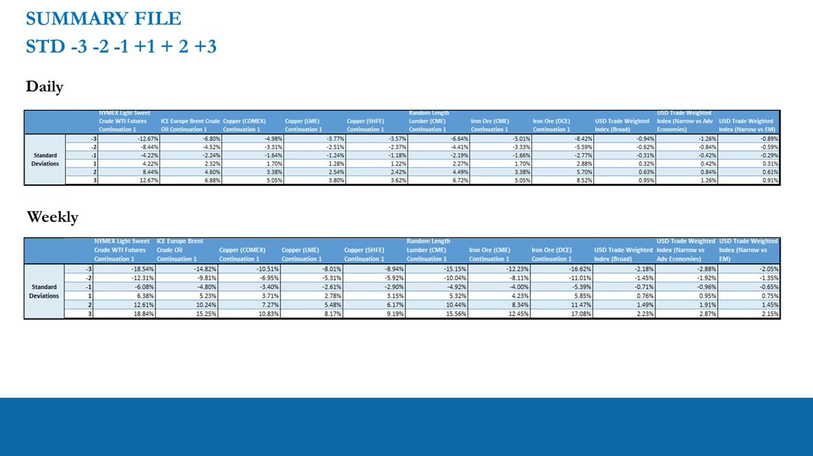
Glossary
- Cyclical commodityAn industrial commodity (oil, copper, lumber, iron ore) whose demand and price move with the business cycle, making it a leading gauge to inflation and growth.
- Coincident indicatorA statistic that moves at the same time as the economy (e.g. Core CPI, PPI All Commodities) — useful only as confirmation, not for anticipation.
- Core CPI (CPILFESL)CPI excluding food and energy, stripping out volatile international food/oil prices to show underlying consumer inflation; a coincident indicator.
- PPI All Commodities (PPIACO)Producer Price Index measuring business input costs across many commodities and industries; monthly, indexed to 100 in 1982.
- Demand-led vs supply-ledWhether a commodity price move is driven by changing demand (a strong, clean GDP signal) or by supply/cost-push factors (a weak signal to be discounted).
- Distribution of Returns (DoR)A standard-deviation study of daily/weekly percentage changes: within 1 SD is 'Normal', beyond 1/2/3 SD is 'Abnormal'.
- Commitment of Traders (COT)The CFTC report of non-commercial (hedge-fund) long/short positions in a commodity — a forward sentiment gauge of the smart money's inflation/growth view.
- The flipWhen hedge-fund net positioning crosses from net short to net long (or vice versa); a turning-point signal whose rate of change shows how committed the shift is.
- Trade-weighted dollar indexA Fed index of the USD versus a weighted basket of trading-partner currencies (Broad, AFE, EME); it moves inversely to dollar-priced commodities.